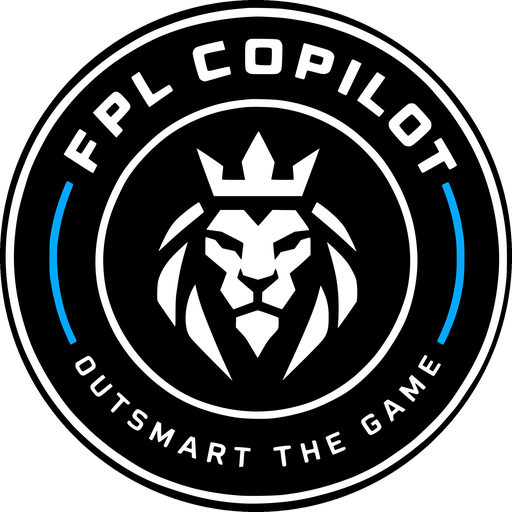
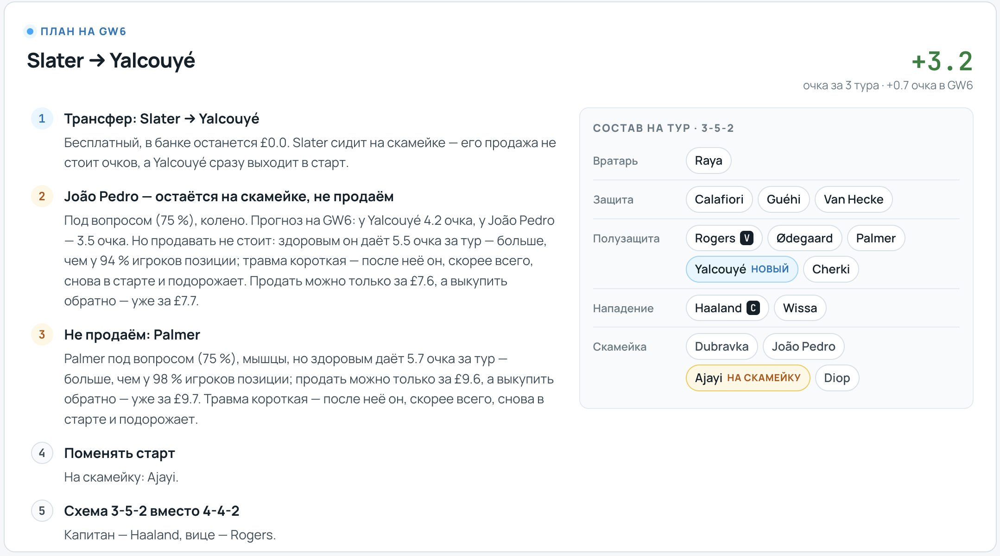
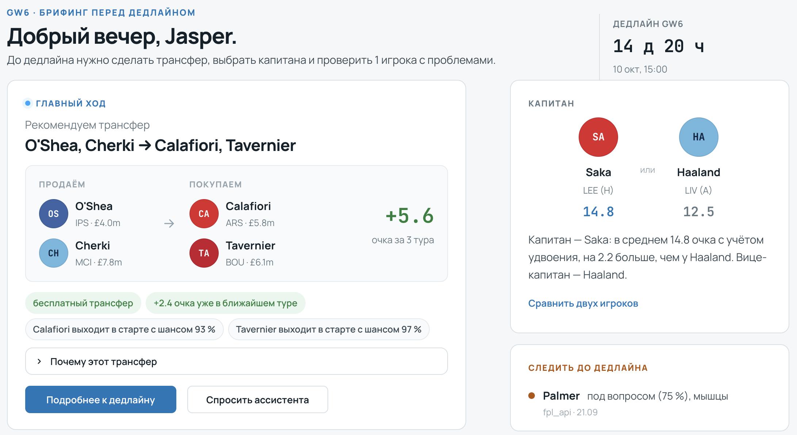
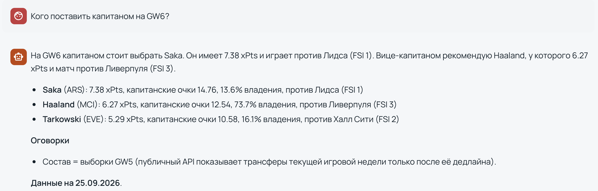
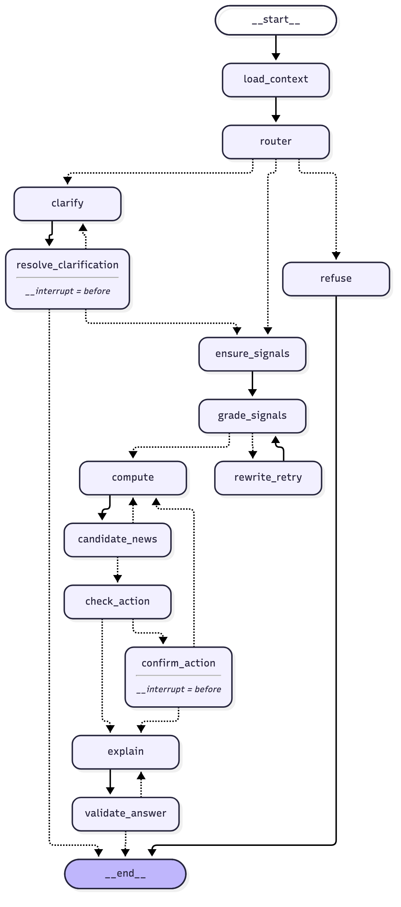
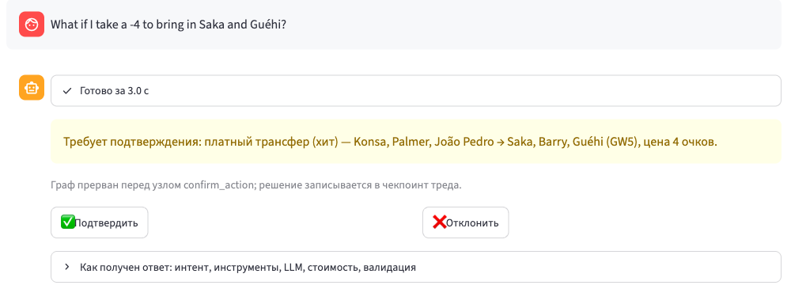

Помощник менеджера Fantasy Premier League: новости о травмах, ожидаемые очки и оптимальный состав — с объяснением, в котором ни одно число не придумано моделью.
Zhanibek Kairgeldinov · 25 сентября 2026
fpl-copilot.duckdns.org · github.com/ZHKAIR/nfactorial-fpl-copilot
Пользователь: менеджер FPL, который перед каждым дедлайном хочет за 5 минут понять, кого продать, кого поставить капитаном, стоит ли платить −4 очка за лишний трансфер и когда играть фишку.
менеджеров в FPL сезона 2026/27 (10 976 255 по официальному API)
Травмированный игрок в старте — минус очки и минус ранг, а трансфер обратно стоит ещё −4.
| задача | кто решает | где в коде |
|---|---|---|
| понять вопрос: интент, игроки, тур, фишки, ограничения | LLM gpt-4o-mini, T = 0, structured output | agent/llm.py |
| кто такой «Палмер», «Габриэл» | код матчер сущностей, транслитерация | agent/resolve.py |
| что пишут о травме → сигнал с цитатой и датой | поиск + LLM + проверка цитат кодом | rag/extract.py |
| ожидаемые очки игрока на тур | код компонентная модель xPts, без LLM | core/xpts.py |
| состав, трансферы, план на 5 туров, хит или нет | код MILP-оптимизатор (HiGHS) | core/optimizer.py |
| объяснить решение человеку | LLM только числами из фактов | agent/validate.py |
8 экранов: Брифинг · Мой состав · К дедлайну · План · Игрок · Сравнение · Чат · О системе. Живая версия — fpl-copilot.duckdns.org (вход по паролю).

К дедлайну → «План на тур» (команда 2558291): «João Pedro — не продаём»: здоровым даёт 5.5 очка за тур (больше, чем у 94 % позиции), продать можно за £7.6, выкупить — уже за £7.7. Всё посчитано кодом, без LLM.

Брифинг (менеджер 895045): главный трансфер +5.6 очка за 3 тура, шансы выйти в старте, капитан Saka против Haaland, кого проверить до дедлайна.
fpl-intelligence.
Чат на живом сайте, 25.09: ответ за ~15 с, те же 14.76 и 12.54, что на Брифинге.
HITL-прерывание, цитаты новостей [fpl_api, 24.09], одинаковые числа в UI, чате и MCP.
CLI агента, транскрипт docs/agent_demo_output.md, скриншоты, запись демо.

сгенерирован кодом: get_graph().draw_mermaid()
Агенту нужны ровно три вещи: условные рёбра, ограниченный цикл и interrupt_before с чекпоинтером — прервать граф в UI и продолжить в другом процессе. Это API графа состояний.
CrewAI — ролевые «команды агентов» ради видимости, здесь один агент. Parlant — про правила диалога, не про вычисления. Свой автомат — без чекпоинтов и resume.
router → 16 интентов; ставки и off-topic → refuse без объяснителя за ~1 с
сигнал слабый → повторный поиск ≤ 2 раз; покупка травмирована → пересчёт 1 раз
«какой Gabriel?» и «платный трансфер / Wildcard?»; состояние в SQLite

Прерывание перед confirm_action: решение пишется в чекпоинт треда, «Отклонить» → пересчёт без хита.
тур, дедлайн, состав, 4 проблемы состава
intent = transfer, игрок Palmer, горизонт 3
Cole или Alex Palmer? В составе один → Cole
сигнал моложе 12 ч — из БД, иначе поиск + извлечение
достаточно ли доказательств; нет → повторный поиск
xPts 4.76 · MILP с «продать Palmer» + свободная альтернатива
новости о покупках топ-3 маршрутов, ≤ 3 извлечения
в рекомендации нет хита → без прерывания
вердикт = headline кода, таблица маршрутов, цитаты
39 имён и 18 чисел сверены с фактами → passed
на типичный вопрос: роутер + объяснитель
по 60 вопросам чата, максимум $0.0055
p95 14.8 с; замер 17.09 этого вопроса — 6.5 с, $0.0012
RSS BBC · Sky · Guardian · FFScoutполный текст из HTML (trafilatura)статусы FPL
| выбор | почему так, а не иначе |
|---|---|
| чанк = абзац ≤ 300 токенов + заголовок статьи | без заголовка «he trained fully on Thursday» ни о ком — не находится ни BM25, ни эмбеддингом |
| text-embedding-3-small | корпус маленький: полная переиндексация ≈ 27 с и $0.004 |
| pgvector в том же Postgres | защита от утечки из будущего — одно условие published_at ≤ as_of в SQL |
| BM25 + dense → RRF → flashrank | reranker локально на CPU, без сети и денег; +4 п.п. recall@8 |
| abstention до LLM | нет упоминаний игрока → «неизвестно» без вызова модели: 4/4, 0 ложных |
41 документ: официальные правила 2026/27 и гайды сообщества, 623 чанка. Ответ — только с цитатами [n], код проверяет, что цитата дословно есть в источнике.
Без time-decay: гайд 2021 года про EO — лучший в корпусе, дата не сигнал.
«João Pedro — под вопросом (75 %), колено» + цитаты [ffscout, 16.09], [fpl_api, 24.09] + тур возвращения. Модель минут читает сигнал, а не текст.
14 tools, 5 resources, 1 prompt; stdio и streamable-http.
recommend_transfers, build_gameweek_plan, predict_player, analyze_player_risk, search_strategy_kb…
Почему MCP, а не REST: те же инструменты сразу работают в Cursor и Claude Desktop без своего клиента. Сервер отдаёт решения, а не сырые данные FPL. Ошибки — всегда {error, hint}.
SKILL.md с триггерами: «should I sell X», «who to captain», «take a −4», «bench boost in GW N», вопросы о правилах.
Чем лучше промпта: фиксирует порядок вызовов (get_gameweek_context → diagnose_squad → recommend_transfers → analyze_player_risk), жёсткие запреты (только числа из инструментов, никаких коэффициентов ставок) и шаблон ответа.
Pick Team → строгий JSON → код резолвит имена → правила FPL (2/5/5/3, ≤ 3 из клуба) → тот же Squad, что из API.
Без него приложение не знает текущий состав: API отдаёт выбор только после дедлайна.
detail=high: 15/15, $0.0066. detail=low в 4.5× дешевле, но подменил игрока (Virgil → Livramento) — отклонён.
| набор | n | что покрывает |
|---|---|---|
| signals | 27 | травмы, дисквалификации, конфликт FPL и прессы, нет новостей, два Henderson, 4 Gabriel |
| retrieval | 18 | разметка по статьям, 3 запроса без ответа по построению |
| strategy KB | 10 | правила с обязательной цитатой, вопрос вне базы → NOT_COVERED |
| chat | 60 | 50 RU / 10 EN, опечатки, 7 многоходовых, 5 off-topic и инъекций |
| chat holdout | 15 | написаны после последней правки промптов, прогнаны один раз |
accuracy strict / lenientmacro-F1P@8 · R@8 · MRRreturn_gw exactfaithfulness: LLM-judgeвалидатор с 1-й попытки«полезен»: ручная разметка
evals.run_rag · run_kb · run_chat · run_hparams · run_models → evals/results/*.json с коммитом, корпусом, ценой; бюджет --budget-usd. Корпус закреплён на as_of — прогоны воспроизводимы.
n = 27 не различает изменения меньше ~10 п.п.; faithfulness ≠ правда; смена размера судьи меняет вердикт на 47 % ответов — оценки судьи читаем как относительные.
| эксперимент | гипотеза | результат | решение |
|---|---|---|---|
| #1 режимы поиска | hybrid + rerank лучше dense | поиск — да (recall@8 0.837 против 0.794), точность сигнала — нет (24 против 26 из 27) | rerank в чате, dense в пакетном обновлении |
| #2 промпт v2 + abstention | календарь туров в промпте починит тур возвращения | 0/8 → 8/8; порог rerank-score для «нет новостей» дал 4 ложных отказа | тур считает код; abstention по упоминаниям: 4/4 |
| #3 «упало из-за корпуса» | точность 0.852 → 0.741 из-за роста корпуса | утечка из будущего: prior FPL брал снимки после as_of | prior по snapshot_at, корпус закреплён на as_of |
| #4 form_notes | форма отдельно от доказательств здоровья | цитаты формы 4/78 → 2/73, но точность 25 → 23/27 | не выпущен, остался опцией |
| чат v3 → v4 | чат слаб из-за структуры, а не модели | ложные отказы 10/55 → 0/55; «полезен» 17 → 49 → 54 из 60; holdout 13/15 | v4 по умолчанию |
| модель (извлечение, 27 игроков) | точно | цена |
|---|---|---|
| gpt-4.1-nano | 15/27 | дешевле |
| gpt-4.1-mini | 21/27 | 2.7× |
| gpt-4o-mini — выбрана | 23/27 | 1× |
| gpt-4.1 | 23/27 | 15× |
| gpt-5.4-mini — кандидат на апгрейд | 24/27 | 5.7× |
Сильные модели в объяснении не вернее: gpt-4.1 вписал те же выдуманные производные числа, их ловит валидатор. Reasoning-модели — без управления temperature и с непредсказуемой ценой.
T ∈ {0, 0.3, 0.7} на точность не влияет, но при T = 0 совпадают 12/23 текстов summary, при 0.7 — 0/23. Объяснитель: с 1-й попытки проходит валидатор 0.92 при T = 0 против 0.79 при 0.2.
Объяснение: 300 → обрезано 100 %, 600 → 25 %, 1000 → 0 % → взяли 1400, с русским и блоком новостей — 2000. top_p 0.5 ничего не изменил → по умолчанию.
Ответ из фактов кода без LLM, отказы и уточнения без LLM, сигналы из кэша. Переключение на другого провайдера спроектировано, но не реализовано.
wrap_openai на каждом вызове OpenAI, @traceable в RAG и vision, callbacks графа с тегами intent:*, model:*, strategy:*.
При отказе LangSmith (квота, 429) трейсинг в процессе выключается сам, ответы не задерживаются.
Hetzner 2 vCPU / 4 GB (≈ €5 в месяц), docker compose: Caddy (HTTPS Let's Encrypt) → Streamlit → Postgres + pgvector, ingest новостей каждые 30 мин, бэкап базы по cron.
877 тестов; граф, чат, UI и MCP — на фейках, без сети и LLM.
LLM полезна там, где её ответ можно проверить кодом. Падение метрики сначала проверяем на утечку, а не объясняем «данными».
fpl-copilot.duckdns.org
github.com/ZHKAIR/nfactorial-fpl-copilot